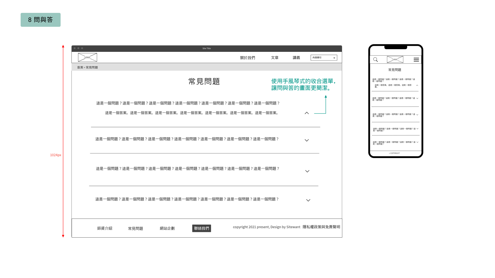
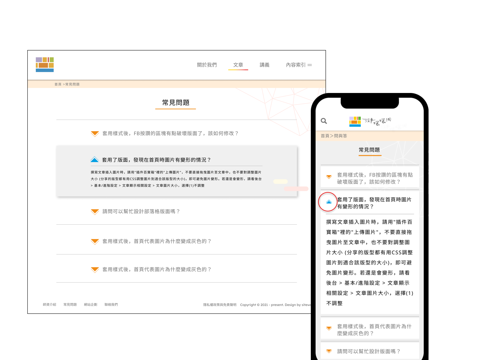

網站企劃
Ｈi！想了解「沒事曬曬網」的幕後工作嗎？
現在就帶你一覽曬曬網的發想過程與組織架構吧！

曬曬網擁有專業的網站設計業師指導，教授建置團隊實用的設計理論與技巧。團隊成員雖未有完整的網站建置經驗，卻能利用成員們來自不同行業的職場能力與經驗，作為網站企劃的養分，以多元角度設計與思考，使網站功能更貼切不同職業背景的使用者。
使用者分析
使用者A
無相關經驗的網頁設計新鮮人
中文系大學應屆畢業生，有感於文科找工作不容易，希望在就業前學習一些專業技能。對於網頁設計有興趣，打算從基礎開始了解。 目前時間自由，可以全職自修。希望可以透過網路自學，同時累積作品集，達到成為網頁UXUI設計師的目標。
使用者B
想要更上一層樓的業界自學者
目前網頁設計產業公司擔任正職PM，長期與工程師和UX/UI設計師合作，對於寫程式以及使用者介面設計都有基本的了解，希望可以轉職成為UX設計師。 只有下班後的時間可以自由運用，需要在有限的時間內擷取最精華的內容。產業資訊更迭速度快，希望學習資源平台能夠定期汰舊換新，整理好最新的趨勢給使用者。
使用者C
決心推廣個人學習品牌的業界老師
業界教網頁設計的正職或兼職教師，希望可以透過在這個網站分享文章以曝光行銷自己的網頁設計課程，和更多學生取得接觸的機會。
使用者D
台北職能發展學院的老師
需要透過課程網站發布資訊，分享學習資源，甚至與學生互動，扮演網站管理者的角色。
同理心地圖
使用者A
無相關經驗的網頁設計新鮮人
痛點：
網路上資訊五花八門，東一點西一點，很難有系統性的循序漸進學習。
需求：
現在網路上獲取資訊太多反而容易引起焦慮，希望每一個主題都能有懶人包，整理過的資源容易吸收， 學習也能更有效率！
使用者B
想要更上一層樓的業界自學者
痛點：
能夠自由安排的時間很少，不定期加班導致安排固定的夜間課程會有困難。
需求：
網頁設計產業推陳出新非常快速，時常會覺得跟不上國際趨勢。希望能有一個平台隨時提供最新資訊。
使用者C
決心推廣個人學習品牌的業界老師
痛點：
由於在大部分的時間都在教課，所以沒有心力從零開始經營分享課程專業的個人網站，同時又希望自己可以接觸到更多學生。
需求：
有一個平台能夠曝光自己的文章或課程，在免費分享資源的同時也觸及潛在客戶，同時提升個人知名度。
使用者D
台北職能發展學院的老師
痛點：
實體課程講義整合之後苦無發佈的管道。
需求：
希望可以透過一個功能完善的平台提供實體課程的資訊以及教學講義，幫助正在學習網頁設計的新舊學生。
功能地圖
Functional Map分成三個層次來思考，分別為首頁、Header、Footer。
首先，在首頁方面，有[關於我們]、[文章列表]、[講義列表]等頁面，以及由上而下延伸出來的次頁面、資訊內容與功能。
其次，在Header方面，除了延續首頁重要頁面的超連結之外，另外增加了主題索引的功能，以利使用者可以快速找到資訊。
最後，在Footer方面，則是規劃了[師資介紹]、[網站企劃]、[問與答]等頁面的超連結，有助於使用者更進一步了解本網站的相關資訊。
Flowchart
Flowchart是什麼？
在網站地圖規劃完成之後，就要進行操作流程的檢視。基本上就是流程圖的一種，在繪製的過程中站在使用者的角度來體驗整個操作網站的過程，藉以審視目前的網站規劃與設計是否仍有不完善的地方。仔細思考使用者的操作上的每一個可能性，會不會在網站迷路？會不會走進死胡同？藉著Flowchart來檢視流程邏輯是非常重要的。
我們怎麼做？
由於第一版的網站功能並不太複雜，多是頁面呈現，使用者需要做的決策也不多，所以在網站規劃上是相對容易的。在繪製Flowchart的過程中，我可以再次確認使用者在頁面之間的轉換都具備清楚的指引，並且合乎常理，使用者可能需要進行的決策所有可能都被考量進去，才不會造成使用者因為操作上的困惑而提早結束造訪。同時，Flowchart中起終點這個元件，也幫助我們重新思考使用者會透過什麼樣的方式造訪我們的網站，而我們網站的目標又是什麼，才不至於在一個大型專案中迷失。
UI Flow
UI Flow
(介面流程)指的是頁面之間的操作動線。較偏邏輯邏輯層面，是sitemap的進階延伸，目的在於更清楚地梳理想法跟步驟，知道使用者怎麼操作一項功能後，才能去規劃動線。常見形式有文字動線與介面動線，本專案使用文字動線去執行。文字動線的UI
Flow是以文字說明頁面與資訊之間的層級關係，以數字與字母顯示層級，例如:1-1-1a、2.1a。
我們在Funtional
Map的步驟時確認總共會有的頁面跟主要內容，這階段大家細部討論內容有甚麼以及資訊該如何呈現。大家邊討論邊列出每個頁面會呈現的功能跟區塊，思考是否符合清楚易讀性、資訊完整性、以及頁面與頁面之間的關聯。
確認有沒有前一階段沒有想到、遺漏的功能，並同時讓Wireframe的畫面慢慢成型。平均分配頁面後，各整理出頁面的UI Flow，再由UX負責人統整跟檢查。
Wireframe
-

-

- 
此專案在UI Flow階段已將所需頁面數量、文字呈現、功能做全面性確認。到Wireframe階段UX團隊能快速了解各頁面資訊架構去發想確認版面內容功能的呈現如何與使用者產生互動關係。團隊將繪製的每一頁Wireframe就資訊內容與功能在頁面上呈現的方式與位置做深入探討易讀性與修正，最終再盤點檢示版面是否有遺漏資訊、功能與整體流程是否流暢。
Logo與站名
沒事曬曬網
曬在網上，即是日常。
「曬曬網」取自「三天打魚，兩天曬網」。 不過這裡的「網」字代表網際網路，帶有人們平日偷閒上網的慵懶趣味性；「曬」字能令人聯想到沐浴在溫暖柔和的陽光下， 如同曬曬網團隊想讓學習網站設計這件事，也能顯得活潑逗趣、平易近人。
放心，這裡沒有釣魚程式，盡情曬網吧！
而Logo以不同大小的鮮豔方塊組成， 象徵人們開啟電腦，悠遊在大大小小的視窗間， 沈浸於豐富的資訊世界帶來的驚喜。 簡潔的色塊排列，符合科技的現代感與輕快的生活節奏。
曬網小夥伴


慵懶的好好先生 -【水豚君】
曬網想給予使用者歡樂逗趣、輕鬆學習的感覺，在此氛圍之下，帶有慵懶、賣萌、溫和又活潑個性的水豚君-Lucky就此誕生 !! 搭配著網站背景簡易色塊元素的設計，最初以玩心趣味的七巧板作為發想的出發點，同時希望能夠結合程式設計的科技感，團隊決定以Low Poly的方式呈現水豚君。
七巧板在拼湊的過程中會不停地重新排列組合，用以創意發想出圖形的更多可能性，隱喻著使用者在學習網頁設計的路上，能夠有許多不同的發想，進而創造出更好的UX體驗和UI設計，而Low Poly低多邊形網格就像七巧板的色塊拼接，深淺不一的配色，勾勒出現代科技的3D動畫感，讓水豚君同時帶有童心趣味和資訊的科技感。
那就讓充滿活潑元氣和擁有資訊科技知識的Lucky陪伴你輕鬆學習網頁設計吧！
設計規範
色彩：
採用繽紛、活潑、多樣化的氛圍作為主色調，並用黑灰白色階，凸顯設計層次。
按鈕：
分為功能型、文字連結型、卡片型，在懸浮、點擊、聚焦狀態時皆有變化，以利使用者更直覺的操作介面。
字體：
中文字體Noto Sans CJK／英文字體lexend根據大小，分為標題時使用的H1～H6及內文使用的段落文字標籤。
元素：
根據設計風格、標準色及網站內容，製作出各式向量小圖，增加設計豐富度。
MockFlow
-

-

-

- 